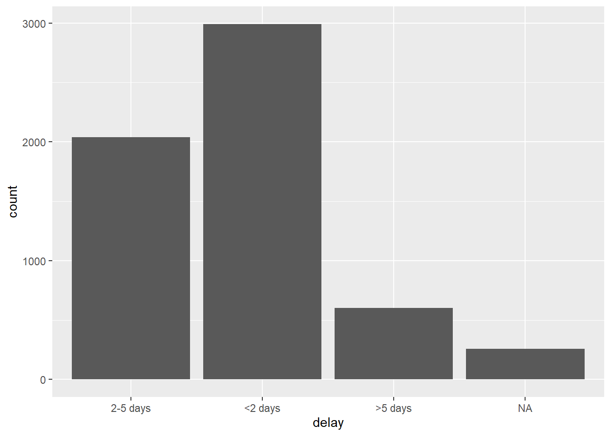

10 Factors
In R, factors allow for ordered categorical data. A column can be converted from class numeric, categorical, or even logical to class factor. In this case, the values are stored as ordered integer levels, and can display with assigned labels.
In a column of class factor:
- the possible values are restricted - values not already defined as levels are rejected
- values are ordered, which impacts how they display in tables and plots
This page demonstrates use of functions from the package forcats (a short name for “For categorical variables”) and some base R functions. We also touch upon the use of lubridate and aweek for special cases related to epiweeks.
Factors are useful in statistical modeling, which allows integer values such as 1/0 to be evaluated categorically and not continuously.
10.1 Preparation
Load packages
This code chunk shows the loading of packages required for the analyses. In this handbook we emphasize p_load() from pacman, which installs the package if necessary and loads it for use. You can also load installed packages with library() from base R. See the page on R basics for more information on R packages.
pacman::p_load(
rio, # import/export
here, # filepaths
lubridate, # working with dates
forcats, # factors
aweek, # create epiweeks with automatic factor levels
tidyverse # data mgmt and viz
)Import data
We import the dataset of cases from a simulated Ebola epidemic. If you want to download the data to follow step-by-step, see instructions in the Download handbook and data page. The dataset is imported using the import() function from the rio package. See the page on Import and export for various ways to import data.
# fake import the linelist
linelist <- import("linelist_cleaned.xlsx")10.1.1 Example: new categorical column
For demonstration in this page we will use a common scenario - the creation of a categorical variable.
We use the existing column days_onset_hosp (days from symptom onset to hospital admission) and classify each row into one of several categorical groupings.
We can use the dplyr function case_when() to apply logical criteria on each row, resulting in values for the new column delay
linelist <- linelist %>%
mutate(delay = case_when(
days_onset_hosp < 2 ~ "<2 days",
days_onset_hosp >= 2 & days_onset_hosp < 5 ~ "2-5 days",
days_onset_hosp >= 5 ~ ">5 days",
is.na(days_onset_hosp) ~ NA_character_,
TRUE ~ "Check me")) 10.2 Non-factor categorical
The column delay (created in the Preparation section above) is a categorical column of class Character - not yet a Factor. Thus, in a frequency table, we see that the values appear in a default alphabetical order - an order that does not make much intuitive sense:
table(linelist$delay, useNA = "always")##
## <2 days >5 days 2-5 days <NA>
## 2990 602 2040 256Likewise, if we make a bar plot, the values also appear in this order on the x-axis. This order does not make sense. (see the ggplot tips page for more on ggplot2 - a very common and useful visualization package).
ggplot(data = linelist)+
geom_bar(mapping = aes(x = delay))10.3 Convert to factor
To initially convert a character or numeric column to class Factor, we suggest using the base R function factor(). Below the data frame linelist is modified such that the column delay is converted to a factor. The default order of the values will be alpha-numeric.
linelist <- linelist %>%
mutate(delay = factor(delay))Unless specified, the levels will still be in alphabetic (or numeric) order. Use the base R function levels() to see how the levels of time_period are ordered. Note that NA is not a factor level.
levels(linelist$delay)## [1] "<2 days" ">5 days" "2-5 days"You can specify the levels and their order in your initial conversion command to the levels = argument.
linelist <- linelist %>%
mutate(delay = factor(delay, levels = c("<2 days", "2-5 days", ">5 days")))
levels(linelist$delay)## [1] "<2 days" "2-5 days" ">5 days"10.4 Adjust level order
The package forcats offers several useful functions to easily adjust the order of a factor’s levels:
- Use
fct_relevel()to manually adjust the order
- Use
fct_infreq()to reorder by frequency (highest to lowest)
- Use
fct_inorder()to reorder by order of appearance in the data
- Use
fct_reorder()to reorder by another column (e.g. order time_period levels by their row’s median delay to admission)
- Use
fct_rev()to reverse the existing order
- Use
fct_reorder2()to reorder by the final values when plotted with two other columns
These functions can be applied outside of a plot to re-define the column, or within a plot to affect just one specific plot.
Examples
fct_relevel()
This function is used to manually order the factor levels. Within the parentheses, first provide the factor column, then provide the levels in the desired order (as a character vector within c()). Here is an example of redefining the column delay (which is already class Factor) and specifying the desired order of levels.
# re-define level order
linelist <- linelist %>%
mutate(delay = fct_relevel(delay, c("<2 days", "2-5 days", ">5 days")))If you only want to move one level, you can specify it to fct_relevel() alone and give a number to the after = argument to indicate where in the order it should be. For example:
# re-define level order
linelist <- linelist %>%
mutate(delay = fct_relevel(delay, "<2 days", after = 1))
levels(linelist$delay)## [1] "2-5 days" "<2 days" ">5 days"The above will define the level order in the data frame. Alternatively, you can adjust the levels from within a ggplot, and the re-ordering of the levels will only apply within the plot. Below, as the the delay column is mapped to the x-axis of the plot it is wrapped within fct_relevel().
# Incorrect order - no adjustment within ggplot
ggplot(data = linelist)+
geom_bar(mapping = aes(x = delay))
# Factor level order adjusted within ggplot
ggplot(data = linelist)+
geom_bar(mapping = aes(x = fct_relevel(delay, c("<2 days", "2-5 days", ">5 days"))))
Note how the default x-axis label is now quite complicated - you can overwrite this with the labs() in ggplot.
fct_infreq()
To order by frequency that the value appears in the data, use fct_infreq(). Any missing values (NA) will automatically be included at the end. You can reverse this order by further modifying with fct_rev().
This function can be used within a ggplot(), as shown below.
# ordered by frequency
ggplot(data = linelist, aes(x = fct_infreq(delay)))+
geom_bar()+
labs(x = "Delay onset to admission (days)")
# reversed frequency
ggplot(data = linelist, aes(x = fct_rev(fct_infreq(delay))))+
geom_bar()+
labs(x = "Delay onset to admission (days)")

Here is an example within a data frame:
linelist %>%
mutate(delay = fct_infreq(delay),
delay = fct_rev(delay))fct_reorder()
Use this function to order the levels by another column. For example, to order boxplots showing delay by the median CT value of each delay group.
In the examples below, the x-axis if delay group, and the y = axis is CT value. The boxplots are also colored by delay group.
In the first example, the baseline order of the levels applies (as set earlier in this page) - they increase incrementally updward by delay.
In the second example, the x-axis column has been wrapped in fct_reorder(), with the column ct_blood as the second argument. The default is order delay by the median ct_value. An alternative function can be supplied, e.g. “mean”, or “max”.
Note there are no explicit grouping steps required prior to the ggplot() - the grouping and calculations are all done internally.
# boxplots ordered by original factor levels
ggplot(data = linelist)+
geom_boxplot(
aes(x = delay,
y = ct_blood,
fill = delay))+
labs(x = "Delay onset to admission (days)",
title = "Ordered by increasing delay (original factor levels)")+
theme_classic()+
theme(legend.position = "none")
# boxplots ordered by median CT value
ggplot(data = linelist)+
geom_boxplot(
aes(x = fct_reorder(delay, ct_blood, "median"),
y = ct_blood,
fill = delay))+
labs(x = "Delay onset to admission (days)",
title = "Ordered by median CT value in group")+
theme_classic()+
theme(legend.position = "none")
fct_reorder2()
Use this function to order the legend colors by the vertical order of groups at the “end” of the plot. For example, if you have lines showing case counts by hospital over time, you can apply fct_reorder2() to the color = argument within aes(), such that the vertical order of hospitals appearing in the legend aligns with the order of lines at the terminal end of the plot. Read more in the function documentation.
linelist %>% # begin with the linelist
count( # summarise so n = counts of rows by epiweek and by hospital
epiweek = lubridate::floor_date(date_onset, "week"), # create and group by epiweeks
hospital # also group by hospital
) %>%
ggplot()+ # start plot
geom_line( # make lines
aes(x = epiweek, # x-axis epiweek
y = n, # height in number of rows
color = fct_reorder2(hospital, epiweek, n)))+ # grouped by hospital and colors ordered by n value at end of plot
labs(color = "Hospital") # change legend title
fct_lump()
To “lump” together many low-frequency levels into an “Other” group, you can use this function. Do one of the following:
- Set
n =argument as the number of groups you want to keep. All other values will combine into “Other”.
- set
prop =argument as the proportion above which you want to keep. All other values will combine into “Other”.
You can also change the label for “Other” by using other_level =. Below, all but the two most-frequent hospitals are combined into “Other hospitals”.
ggplot(data = linelist)+
geom_bar(aes(x = fct_lump(hospital, # column for x-axis
n = 2, # keep two most-frequent levels
other_level = "Other hospitals"))) # label for "Other" group
You can also use fct_other() to manually assign factor levels to an “Other” group. Below, all hospital values aside from “Port Hospital” and “Central Hospital” are combined into “Other”.
You can use the arguments keep =, or drop =, and can change the label of “Other” with other_label =.
linelist %>%
mutate(hospital = fct_other(hospital, keep = c("Port Hospital", "Central Hospital"))) %>%
select(hospital) %>%
table()## .
## Central Hospital Port Hospital Other
## 454 1762 367210.5 Missing values
If you have NA values in your column, you can easily convert them to a named value such as “Missing” with fct_explicit_na(), as performed below temporarily on the column delay:
linelist %>%
mutate(delay = fct_explicit_na(delay, na_level = "Missing")) %>%
select(delay) %>%
table(useNA = "always")## .
## 2-5 days <2 days >5 days Missing <NA>
## 2040 2990 602 256 010.6 Edit labels
Adjust the factor labels with fct_recode(). remember that these do not change the underlying values, only their labels.
Below, the labels of the factor column delay (grouped days from onset to admission) are edited:
The old labels:
table(linelist$delay, useNA = "always")##
## 2-5 days <2 days >5 days <NA>
## 2040 2990 602 256Now the labels are changed, using syntax fct_recode(column, "new" = "old","new" = "old", "new" = "old"). Remember that NA is not a formal level unless changed (e.g. with fct_explicit_na() as shown above).
linelist <- linelist %>%
mutate(delay = fct_recode(delay,
"Less than 2 days" = "<2 days",
"2 to 5 days" = "2-5 days",
"More than 5 days" = ">5 days"))
table(linelist$delay)##
## 2 to 5 days Less than 2 days More than 5 days
## 2040 2990 60210.7 Add/drop levels
If you have a factor and want to add levels (regardless of whether there are any rows with those values), use fct_expand().
See how if we classify “hospital” as a factor, and then try to change the values, an error is returned:
## [1] "Central Hospital" "Military Hospital"
## [3] "Missing" "Other"
## [5] "Port Hospital" "St. Mark's Maternity Hospital (SMMH)"Now we can add the level “University Hospital”:
linelist <- linelist %>%
mutate(hospital = fct_expand(hospital, "University Hospital"))
levels(linelist$hospital)## [1] "Central Hospital" "Military Hospital"
## [3] "Missing" "Other"
## [5] "Port Hospital" "St. Mark's Maternity Hospital (SMMH)"
## [7] "University Hospital"Epiweeks
Please see the extensive discussion of how to create epidemiological weeks in the Grouping data page.
Please also see the Working with dates page for tips on how to create and format epi weeks.
floor_date()
If you create epiweeks with lubridate’s floor_date(), the values returned be of class Date with format YYYY-MM-DD. If you use them in a plot the dates will naturally order correctly, and you do not need to worry about class Factor. For example, in the ggplot() histogram of onset dates below.
You can adjust the display of the dates on an axis with scale_x_date(). See the page on Epidemic curves for more information. You can specify a “strptime” display format to the date_labels = argument. These formats use “%” placeholders and are covered in the Working with dates page. Use “%Y” to represent a 4-digit year, and either “%W” or “%U” to represent the week number (Monday or Sunday weeks respectively).
linelist %>%
mutate(epiweek_date = floor_date(date_onset, "week")) %>% # create week column
ggplot()+ # begin ggplot
geom_histogram(mapping = aes(x = epiweek_date))+ # histogram of date of onset
scale_x_date(date_labels = "%Y-W%W") # adjust disply of dates to be YYYY-WWw
However, if your purpose in factoring is not to plot, you may convert this epiweek column (YYYY-MM-DD) to a different display format (YYYY-WWw) within the data frame itself, and convert it to class Factor. Use format() from base R to convert the display, then convert to class Factor with factor().
linelist <- linelist %>%
mutate(epiweek_date = floor_date(date_onset, "week"), # create epiweeks (YYYY-MM-DD)
epiweek_formatted = format(epiweek_date, "%Y-W%W"), # Convert to display (YYYY-WWw)
epiweek_formatted = factor(epiweek_formatted)) # Convert to factor
# Display levels
levels(linelist$epiweek_formatted)## [1] "2014-W13" "2014-W14" "2014-W15" "2014-W16" "2014-W17" "2014-W18" "2014-W19" "2014-W20" "2014-W21" "2014-W22"
## [11] "2014-W23" "2014-W24" "2014-W25" "2014-W26" "2014-W27" "2014-W28" "2014-W29" "2014-W30" "2014-W31" "2014-W32"
## [21] "2014-W33" "2014-W34" "2014-W35" "2014-W36" "2014-W37" "2014-W38" "2014-W39" "2014-W40" "2014-W41" "2014-W42"
## [31] "2014-W43" "2014-W44" "2014-W45" "2014-W46" "2014-W47" "2014-W48" "2014-W49" "2014-W50" "2014-W51" "2015-W00"
## [41] "2015-W01" "2015-W02" "2015-W03" "2015-W04" "2015-W05" "2015-W06" "2015-W07" "2015-W08" "2015-W09" "2015-W10"
## [51] "2015-W11" "2015-W12" "2015-W13" "2015-W14" "2015-W15" "2015-W16"DANGER: If you use “Www-YYYY” (“%W-%Y”) display format instead, the default alpha-numeric level ordering will be incorrect (e.g. 01-2015 will be before 35-2014).
aweek
An alternative method if you want to convert dates to epiweeks within a data frame is to use the aweek package function date2week(). You can set the week_start = and if you set factor = TRUE then the output column is an ordered factor. As a bonus, the factor includes levels for all weeks in the span - even if there are no cases that week. This ensure that if you create a table or bar plot that all weeks will appear.
df <- linelist %>%
mutate(epiweek = date2week(date_onset, week_start = "Monday", factor = TRUE))
levels(df$epiweek)See the Working with dates page for more information about aweek. It also offers the reverse function week2date().
10.8 Resources
R for Data Science page on factors. aweek vignette